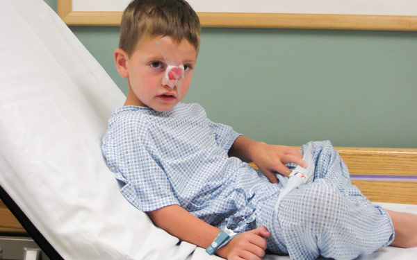
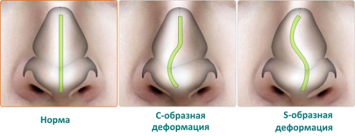

Зачастую нос является первой частью тела, которая повреждается при падении или спортивной травме. Переломы носа редко встречаются у младенцев и детей младшего возраста, поскольку в этом возрасте кости носа в основном состоят из хряща и при сжатии они возвращаются в первоначальное положение, не ломаясь. Но перелом, который деформирует структуру растущего носа, если его не лечить надлежащим образом, позже может затруднить дыхание. Многие деформации носа, которые обнаруживаются во взрослом возрасте, возможно, обусловлены нераспознанными и нелечеными травмами в детском возрасте.
КОГДА БЕСПОКОИТЬСЯ И ЧТО ДЕЛАТЬ
При ударе по носу хрящ, как правило, гнется, а не ломается. Нос уплощается и выпирает в одну или обе стороны, что сопровождается отеком. В этот момент родители или другие опекуны должны немедленно:
• успокоить ребенка;
• приложить лед по обе стороны носа, особенно на распухший участок;
• остановить кровотечение, если оно есть;
• если нет сильного кровотечения и ребенок может дышать травмированным носом, возможно, нет необходимости в экстренном обращении за медицинской помощью.
В течение следующих 1—2 недель проверьте следующее:
• имеет ли нос прямую или изогнутую форму, когда вы смотрите на ребенка в фас (выпирание частей носа в одну или обе стороны все еще может иметь место);
• может ли ребенок свободно дышать обеими ноздрями.

Если нет ни косметических недостатков, ни проблем с дыханием, вы можете подождать еще несколько дней и посмотреть, остался ли нос прямым после исчезновения отека. Если есть сомнения по поводу косметической деформации или затрудненного дыхания, немедленно обратитесь к врачу.
СОВЕТ ДОКТОРОВ СИРС: ЕСЛИ СОМНЕВАЕТЕСЬ, ПРОВЕРЯЙТЕ Как правило, лучше обратиться к врачу для проверки, нет ли повреждений носа. Поскольку нос ребенка быстрее всего растет в период от 1 до б лет, нелеченые травмы, полученные в этом возрасте, могут привести к дальнейшим деформациям. Даже несмотря на то что большинство маленьких травмированных носиков принимают нормальное положение без каких- либо проблем, будет мудро следовать следующему совету: «Если сомневаетесь, проверяйте». |
ЧТО МОЖЕТ СДЕЛАТЬ ВРАЧ
Ваш врач осмотрит нос для выявления внешнего искривления или затруднения дыхания, так же как это делали вы. Он осветит фонариком- назоскопом обе ноздри, чтобы убедиться, что воздух может свободно проходить через них. Если врач не обнаружит косметических и дыхательных проблем, скорее всего, продолжится «выжидательный» период. Распухший или уплощенный нос обычно возвращается к своей нормальной форме в течение 7 дней. На этом этапе рентгеновский снимок не принесет пользы, так как структуры носа у детей в основном представляют собой хрящ. Если врач обнаружит одну из трех нижеперечисленных проблем, он направит вас к детскому ЛОР-врачу:
Если вашего ребенка направят к ЛОР-врачу, специалист может выждать от 1 недели до 10 дней, а затем еще раз проверит, нет ли деформации носовых структур после того, как рассосется отек, прежде чем окончательно определить, нужно ли вправлять нос. Врач, возможно, вправит нос под местной или общей анестезией.
Здоровье ребенка от докторов Сирс / Сирс У. и др.